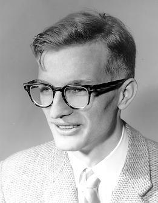

A covariance matrix describes the shape of a Gaussian cloud. How should we compare two such shapes? Subtracting their matrices is possible, but optimal transport suggests a different answer: compare their square roots, after allowing a suitable rotation.
This post was inspired by discussions with Cyril Letrouit about his beautiful recent paper with Tudor Manole, Sharp Stability of Brenier Potentials and its Link to Poincaré Inequalities [1]. Their functional inequality reaches far beyond Gaussians. Here we explore an elementary matrix comparison that it recovers, and prove that comparison directly. The matrix result itself predates their work [3].
Covariances and their square roots
A real symmetric matrix \(A\) is positive semidefinite, written \(A\succeq0\), when \(z^\top A z\ge0\) for every \(z\in\mathbb R^d\). Write \(\mathbb S_+^d\) for this cone. Positive definiteness means strict inequality for every nonzero \(z\).
These are exactly the possible covariance matrices. For a centered random vector \(X\),
\[ A=\mathbb E[XX^\top],\qquad z^\top A z=\mathbb E[(z^\top X)^2]\ge0. \]Conversely, every \(A\succeq0\) defines a centered Gaussian \(\mu_A=\mathcal N(0,A)\). If \(A\) is singular, this is a perfectly valid Gaussian concentrated on a subspace, rather than a distribution with a density on all of \(\mathbb R^d\).
The spectral theorem gives \(A=V\operatorname{diag}(\lambda_i)V^\top\), with \(V\) orthogonal and \(\lambda_i\ge0\). A scalar function acts on eigenvalues:
\[ f(A)=V\operatorname{diag}(f(\lambda_i))V^\top,\qquad A^{1/2}=V\operatorname{diag}(\sqrt{\lambda_i})V^\top. \]This definition does not depend on the choice of basis within a repeated eigenspace. The root \(A^{1/2}\) is the unique positive semidefinite square root. Without that qualification, matrix square roots need not be unique.
Proof: why the positive square root is unique
If \(S\succeq0\) and \(S^2=A\), then \(SA=AS\), so \(S\) preserves every eigenspace of \(A\). On the eigenspace associated with \(\lambda\), its nonnegative eigenvalues must square to \(\lambda\), hence all equal \(\sqrt\lambda\). Thus \(S\) is exactly the spectral root above. \(\square\)
In particular, if \(Z\sim\mathcal N(0,I)\), then \(A^{1/2}Z\sim\mu_A\). The covariance records squared lengths; its square root acts on lengths themselves. This is why square roots, not raw covariances, are the natural objects below.
Bures geometry: choose the best alignment
The Bures–Wasserstein distance on \(\mathbb S_+^d\) is
\[ d_{\mathrm B}(A,B)^2 =\operatorname{tr}A+\operatorname{tr}B -2\operatorname{tr}\!\left[(A^{1/2}BA^{1/2})^{1/2}\right]. \]There are no inverses here: the formula includes singular covariances. Let \(P=A^{1/2}\) and \(Q=B^{1/2}\). Its geometric meaning is the orthogonal Procrustes formula [2]:
\[ d_{\mathrm B}(A,B)=\min_{U\in O(d)}\|P-QU\|_{\mathrm F}, \qquad \|M\|_{\mathrm F}^2=\operatorname{tr}(M^\top M). \]Indeed, \(PZ\) and \(QUZ\) have covariances \(A\) and \(B\) for any orthogonal \(U\). Bures geometry chooses the best relative orientation of their latent Gaussian coordinates.
Proof: an orthogonal alignment becomes a trace square root
Expanding the square gives
\[ \|P-QU\|_{\mathrm F}^2 =\operatorname{tr}A+\operatorname{tr}B-2\operatorname{tr}(PQU). \]A singular value decomposition shows that the maximum of \(\operatorname{tr}(MU)\) over orthogonal \(U\) is the nuclear norm \(\|M\|_*=\sum_i\sigma_i(M)\): in singular coordinates, every diagonal entry of an orthogonal matrix is at most one, and an alignment attains one on every singular direction. Applying this to \(M=PQ\) gives
\[ \max_U\operatorname{tr}(PQU) =\|PQ\|_*=\operatorname{tr}[(PQ^2P)^{1/2}]. \]This is the claimed formula, including when some singular values vanish. \(\square\)
Theorem 1 (Gaussian optimal transport). For any \(A,B\succeq0\),
\[ W_2(\mu_A,\mu_B)=d_{\mathrm B}(A,B), \qquad W_2(\alpha,\beta)^2 =\inf_{\pi\in\Pi(\alpha,\beta)} \int|x-y|^2\,d\pi(x,y). \]Here \(\Pi(\alpha,\beta)\) is the set of couplings with the specified marginals. When \(A,B\) are positive definite, the optimal transport is the linear map \(x\mapsto Tx\), where
\[ T=A^{-1/2}(A^{1/2}BA^{1/2})^{1/2}A^{-1/2}. \]Proof: a quadratic inequality certifies optimality
For positive definite endpoints, \(T\) is symmetric positive definite and \(TAT=B\). Thus \(TX\) has law \(\mu_B\) when \(X\) has law \(\mu_A\). For any pair \(x,y\),
\[ 2x^\top y\le x^\top T x+y^\top T^{-1}y, \]since the difference is \(|T^{1/2}x-T^{-1/2}y|^2\). Taking expectations in any coupling gives
\[ \mathbb E|X-Y|^2 \ge\operatorname{tr}A+\operatorname{tr}B -\operatorname{tr}(TA)-\operatorname{tr}(T^{-1}B). \]Both last traces equal \(\operatorname{tr}[(A^{1/2}BA^{1/2})^{1/2}]\). Equality holds for \(Y=TX\), proving the claim.
For singular endpoints, apply the result to \(A+\delta I,B+\delta I\) and let \(\delta\downarrow0\). Spectral square roots are continuous; coupling the approximating Gaussians with the same standard Gaussian shows convergence in \(W_2\). This proves the distance formula without asserting an inverse-based map formula for a singular source. \(\square\)
This identification explains why Bures is a natural metric: it is the restriction of Wasserstein geometry to centered Gaussians [4], [5]. For noncentered Gaussians, simply add the squared distance between their means.
From Gaussian transport to FID
An important application is the Fréchet Inception Distance (FID), introduced by Heusel et al. to evaluate image generators [8]. Pass real and generated images through a fixed pretrained Inception-v3 network, then estimate the mean and covariance of its last-pooling-layer feature vectors. Writing these as \((m_r,C_r)\) and \((m_g,C_g)\), FID compares their Gaussian approximations:
\[ \operatorname{FID} =\|m_r-m_g\|^2+d_{\mathrm B}(C_r,C_g)^2. \]Bures geometry supplies exactly the covariance term. Despite its name, the conventional score is a squared Wasserstein distance. It is exact optimal transport between the fitted feature Gaussians—not between the original image distributions. A lower score means closer first two feature moments; matching those moments alone does not imply matching the entire feature distribution.
A quantum connection

Donald Bures introduced the distance in operator-algebraic work [6]. In quantum mechanics, states are complex Hermitian positive semidefinite matrices of trace one. The same expression, with transposes replaced by adjoints, is governed by their root fidelity
\[ F_{\mathrm{root}}(\rho,\sigma) =\operatorname{tr}[(\rho^{1/2}\sigma\rho^{1/2})^{1/2}], \qquad d_{\mathrm B}(\rho,\sigma)^2=2(1-F_{\mathrm{root}}). \]Some conventions call \(F_{\mathrm{root}}^2\) the fidelity. For commuting diagonal states, Bures reduces to the square-root distance between probability vectors, closely related to Hellinger distance. Our interpolations below live on the whole covariance cone; they are not constrained to remain trace-one quantum states.
Fix the alignment: linear optimal transport
One can also use the ordinary Frobenius distance \(\|A-B\|_{\mathrm F}\), but this is not the linear optimal transport distance in this story. The latter is
\[ d_{\mathrm{root}}(A,B)=\|A^{1/2}-B^{1/2}\|_{\mathrm F}. \]The distinction is already visible in one dimension: comparing variances \(a,b\), transport costs \(|\sqrt a-\sqrt b|\), not \(|a-b|\). Scaling both covariance matrices by \(c\) scales the first distance by \(\sqrt c\), and the raw Frobenius distance by \(c\).
Proposition 1 (an isotropic reference). Let \(\gamma=\mathcal N(0,I)\). The optimal maps from \(\gamma\) to \(\mu_A,\mu_B\) are \(T_A(z)=Pz,T_B(z)=Qz\), and
\[ \|T_A-T_B\|_{L^2(\gamma)} =d_{\mathrm{root}}(A,B). \]Proof: the covariance of the reference is the identity
The maps are optimal by Theorem 1 with source covariance \(I\); singular targets follow by continuity. Since \(\mathbb E[ZZ^\top]=I\),
\[ \mathbb E|(P-Q)Z|^2 =\operatorname{tr}[(P-Q)^\top(P-Q)] =\|P-Q\|_{\mathrm F}^2. \]The same distance is obtained between the displacement fields \(T_A-\mathrm{Id}\) and \(T_B-\mathrm{Id}\). \(\square\)
This is linear optimal transport (LOT): represent each measure by its transport map from one fixed reference, then compare maps in a Hilbert space [7]. Here the coupling uses the same \(Z\), without optimizing its relative rotation. Consequently,
\[ d_{\mathrm B}(A,B)\le d_{\mathrm{root}}(A,B). \]When do the two distances agree?
Theorem 2 (equality means commutation). For any \(A,B\succeq0\),
\[ d_{\mathrm B}(A,B)=d_{\mathrm{root}}(A,B) \quad\Longleftrightarrow\quad AB=BA. \]If they commute, they have a common orthonormal eigenbasis, and both distances are simply \((\sum_i(\sqrt{a_i}-\sqrt{b_i})^2)^{1/2}\). Noncommutation is precisely what makes optimizing the alignment beneficial.
Proof: when does a trace equal a nuclear norm?
Set
\[ s=\|P\|_{\mathrm F}^2+\|Q\|_{\mathrm F}^2,\quad c=\operatorname{tr}(PQ),\quad F=\|PQ\|_*. \]Then \(d_{\mathrm{root}}^2=s-2c\) and \(d_{\mathrm B}^2=s-2F\). For a real square matrix \(M=\sum_i\sigma_i u_i v_i^\top\),
\[ \operatorname{tr}M=\sum_i\sigma_i(v_i^\top u_i)\le\sum_i\sigma_i. \]Equality forces \(u_i=v_i\) for each positive singular value, so it holds exactly when \(M\) is symmetric positive semidefinite. Applied to \(M=PQ\), this says \(PQ=QP\). Commuting positive matrices have a positive product; conversely, symmetry of that product implies commutation. Finally, \(P,Q\) commute exactly when \(A,B\) do, by simultaneous diagonalization in one direction and squaring in the other. No invertibility was used. \(\square\)
A sharp comparison, independent of dimension
Theorem 3 (at most a factor \(\sqrt2\)). For all positive semidefinite covariances,
\[ \frac1{\sqrt2}\,d_{\mathrm{root}}(A,B) \le d_{\mathrm B}(A,B)\le d_{\mathrm{root}}(A,B). \]Both constants are optimal, already in dimension two. Thus fixing the isotropic reference can stretch distances, but never by more than \(\sqrt2\) [3].
Proof: two applications of Cauchy–Schwarz
Retain \(s,c,F\) from the previous proof and choose an orthogonal \(U\) with \(F=\operatorname{tr}(PQU)\). Put \(M=P^{1/2}Q^{1/2}\) and \(N=Q^{1/2}UP^{1/2}\). Applying Frobenius Cauchy–Schwarz to \(\operatorname{tr}(MN)=\langle M^\top,N\rangle_{\mathrm F}\), followed by \(2ab\le a^2+b^2\), gives
\[ 2F=2\operatorname{tr}(MN) \le\|M\|_{\mathrm F}^2+\|N\|_{\mathrm F}^2 =c+\operatorname{tr}(PU^\top QU). \]Another application gives
\[ \operatorname{tr}(PU^\top QU) \le\|P\|_{\mathrm F}\|Q\|_{\mathrm F}\le s/2. \]Hence \(4F\le2c+s\), or \(s-2c\le2(s-2F)\). This is the lower bound. The upper bound was obtained by setting \(U=I\) in Procrustes alignment.
To see sharpness, take unit vectors \(u,v\) with \(u^\top v=\cos\theta\in(0,1)\), and rank-one covariances \(A=uu^\top,B=vv^\top\). Their square roots equal themselves, and
\[ d_{\mathrm{root}}^2=2\sin^2\theta,\qquad d_{\mathrm B}^2=2(1-\cos\theta),\qquad \frac{d_{\mathrm B}}{d_{\mathrm{root}}} =\frac1{\sqrt{1+\cos\theta}}\longrightarrow\frac1{\sqrt2}. \]The constant one is attained by distinct commuting covariances. Adding a small multiple of \(I\) to the rank-one examples shows that the lower constant cannot improve even if both matrices are required to be positive definite. \(\square\)
Why Letrouit–Manole goes much further
Theorem 1.1 of [1] considers a reference density \(\rho\propto e^{-V}\) for which \(V-\kappa|x|^2/2\) is convex, with \(\kappa>0\). For convex potentials \(\varphi_0,\varphi_1\) whose gradients are in \(L^2(\rho)\), it proves
\[ \operatorname{Var}_\rho(\varphi_1-\varphi_0) \le\frac1\kappa W_2^2((\nabla\varphi_0)_\#\rho,(\nabla\varphi_1)_\#\rho). \]The pushforward \(T_\#\rho\) is the law of \(T(X)\) for \(X\sim\rho\). This controls Brenier potentials, not an unrestricted \(L^2\) distance between their gradients.
For the standard Gaussian, \(\kappa=1\). Take \(\varphi_A(z)=z^\top Pz/2\), so \((\nabla\varphi_A)_\#\gamma=\mu_A\). Gaussian fourth moments yield
\[ \operatorname{Var}_\gamma(\varphi_A-\varphi_B) =\tfrac12\|P-Q\|_{\mathrm F}^2. \]Proof: the variance of a Gaussian quadratic form
Diagonalize \(P-Q\) with eigenvalues \(\eta_i\). Rotational invariance makes the form \(\frac12\sum_i\eta_i Z_i^2\). Independence, \(\mathbb E Z_i^2=1\), and \(\mathbb E Z_i^4=3\) give variance \(\frac14\sum_i2\eta_i^2\), as claimed. \(\square\)
Their theorem therefore gives exactly the lower bound of Theorem 3. The striking generalization is that the potential inequality survives well beyond quadratic potentials and Gaussian target measures.
Two barycentric interpolations
Distances determine how to interpolate. For positive definite endpoints and \(t\in[0,1]\), compare
\[ C_t^{\mathrm{root}}=((1-t)P+tQ)^2, \qquad C_t^{\mathrm B}=((1-t)I+tT)\,A\,((1-t)I+tT), \]where \(T\) is the Gaussian optimal map from Theorem 1. The first linearly interpolates symmetric square roots; the second follows Wasserstein displacement interpolation. Equivalently, if \(U_*\) minimizes the Procrustes problem,
\[ C_t^{\mathrm B}=L_tL_t^\top,\qquad L_t=(1-t)P+tQU_*. \]For positive definite endpoints the optimal alignment satisfies \(QU_*=TP\), which makes these two expressions for the Bures path identical.
Proposition 2 (geodesics and two-point barycenters). Each path is a constant-speed geodesic for its respective distance \(d\), and its point at time \(t\) minimizes
\[ C\longmapsto(1-t)d(C,A)^2+t\,d(C,B)^2. \]Proof: straight factors, then the triangle inequality
The square-root path is a straight segment in the convex cone of positive semidefinite square roots, so its distances are exactly proportional to time. For Bures, interpolating optimally aligned factors gives
\[ d_{\mathrm B}(C_s^{\mathrm B},C_t^{\mathrm B}) \le |t-s|\,\|P-QU_*\|_{\mathrm F}. \]This follows from the factor formulation of Procrustes distance: any factors \(XX^\top,YY^\top\) give an admissible bound \(\|X-Y\|_{\mathrm F}\). Applying the triangle inequality along the path from \(A\) to \(B\) forces equality on every subinterval.
Finally write \(a=d(A,C),b=d(C,B),D=d(A,B)\). Then
\[ (1-t)a^2+tb^2 \ge t(1-t)(a+b)^2\ge t(1-t)D^2. \]The first difference is \(((1-t)a-tb)^2\); the second inequality is the triangle inequality. A constant-speed geodesic point has \(a=tD,b=(1-t)D\), and attains the bound. The endpoints \(t=0,1\) are immediate. \(\square\)
When \(A,B\) commute the two paths coincide. Neither is, in general, the arithmetic covariance interpolation \((1-t)A+tB\).
Numerical experimentation
Each panel shows ellipses \(\{C^{1/2}u:|u|=1\}\) at the same sequence of times. The bold ellipse is the selected time; its color interpolates linearly from blue to red. The axes and their scale are identical in both panels and remain fixed as time changes.
Start with Commuting axes: the paths and distances agree. Switch to Rotated axes, then vary orientation and anisotropy to see the two midpoints separate. Nearly rank one emphasizes thin clouds. The displayed ratio is \(d_{\mathrm{root}}/d_{\mathrm B}\), so it lies between \(1\) and \(\sqrt2\); when both covariances coincide, the ratio is undefined rather than a numerical failure.
The two shape sliders separate relative rotation from anisotropy. Rotation turns the red covariance relative to the fixed blue axes. Anisotropy changes the common major-to-minor radius ratio of both endpoint ellipses, keeping their areas fixed; at ratio one both are circles. The relative overall size is fixed. The time slider independently selects a point on each interpolation path.
The controls keep both endpoints positive definite, though the theorems include singular matrices. The experiment evaluates the closed matrix formulas, not a discretized transport solver. Axis ratio means the ratio of ellipse radii, hence the square root of the covariance eigenvalue ratio.
References
- Cyril Letrouit and Tudor Manole. Sharp Stability of Brenier Potentials and its Link to Poincaré Inequalities. Preprint, 2026.
- Rajendra Bhatia, Tanvi Jain, and Yongdo Lim. On the Bures–Wasserstein distance between positive definite matrices. Expositiones Mathematicae 37(2), 165–191, 2019. Preprint.
- Trung Hoa Dinh, Cong Trinh Le, Bich Khue Vo, and Trung-Dung Vuong. Weighted Hellinger distance and in-betweenness property. Mathematical Inequalities & Applications 24(1), 157–165, 2021.
- D. C. Dowson and B. V. Landau. The Fréchet distance between multivariate normal distributions. Journal of Multivariate Analysis 12(3), 450–455, 1982.
- Matthias Gelbrich. On a Formula for the L² Wasserstein Metric between Measures on Euclidean and Hilbert Spaces. Mathematische Nachrichten 147, 185–203, 1990.
- Donald Bures. An extension of Kakutani’s theorem on infinite product measures to the tensor product of semifinite w*-algebras. Transactions of the American Mathematical Society 135, 199–212, 1969.
- Wei Wang, Dejan Slepčev, Saurav Basu, John A. Ozolek, and Gustavo K. Rohde. A linear optimal transportation framework for quantifying and visualizing variations in sets of images. International Journal of Computer Vision 101(2), 254–269, 2013. Open article.
- Martin Heusel, Hubert Ramsauer, Thomas Unterthiner, Bernhard Nessler, and Sepp Hochreiter. GANs Trained by a Two Time-Scale Update Rule Converge to a Local Nash Equilibrium. Advances in Neural Information Processing Systems 30, 2017. Preprint.